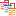

| Constellation Action | Keyboard Shortcut | User Action | Menu Icon |
|---|---|---|---|
| Open Schema View | Ctrl + Shift + S | Views -> Schema View |

|
The Schema View is the source of information for all attributes, types, and plugins that are available in the Constellation schema(s) of the current graph.
From the Attributes tab of the Schema View, you are able to view the key information for all of the attributes in the schema. For each attribute, you can view the attribute type, attribute name, data type, and description. The attribute type is identified by the icon next to the attribute name:
From the Node Types tab of the Schema View, you are able to view all the key information for all different node types in the schema. Information available can include name, description, where it sits in the hierarchy of types, and any regular expressions that may be used for detection or validation.
Similar information is available for transactions from the Transaction Types tab of the Schema View.
You can filter the lists in the Attributes, Node Types, and Transaction Types tabs to help look for particular values. Simply type in a search term into the Filter text field at the top of relevant tab and choose whether filter on values that start with or contains the search term.
From the Plugins tab of the Schema View, you can view all the plugins available to users. This is particularly useful for users accessing Constellation programmatically (e.g. via the REST API). Expanding a plugin will provide details on the plugin name, alias, and important details for all associated parameters.
The full list of plugins (and their associated details) can also be exported to a CSV file via the button in the top right corner of the tab.